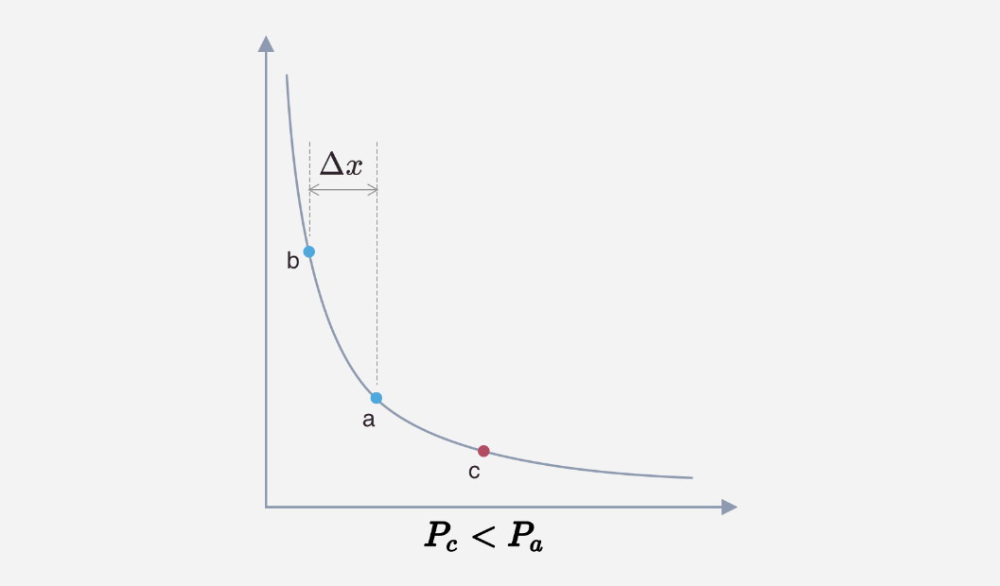
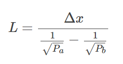
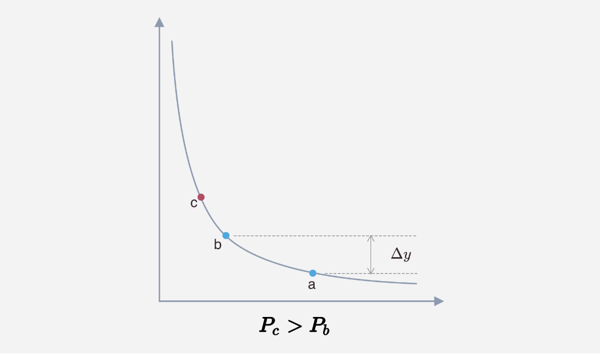
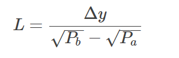
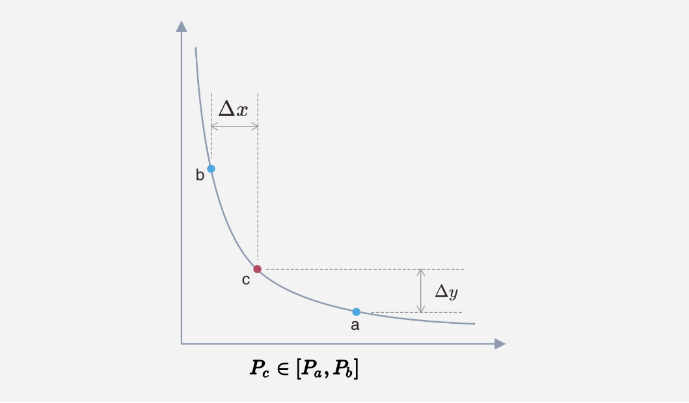
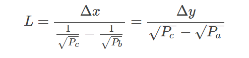

前文已经说过Uniswap V3代码结构 ，一般来说，用户的操作都是从 uniswap-v3-periphery
创建交易对 创建交易对的调佣流程如下：
用户首先调用NonfungoblePositionManager 合约的createAndInitializePoolIfNecessary 方法创建交易对，传入的参数为交易对的token0 token1 fee 和初始价格。
NonfungoblePositionManager 合约内部通过调用 UniswapFactory的createPool 方法完成交易对的创建，然后对交易对进行初始化，初始化的作用就是给交易对设置一个初始的价格。
createAndInitializePoolNecessary方法如下：
1 2 3 4 5 6 7 8 9 10 11 12 13 14 15 16 17 18 19 20 21 function createAndInitializePoolIfNecessary(
首先调用UniswapV3Factory.getPool方法查看交易对是否已经创建， getPool 函数Solidity自动为 UniswapV3Factory合约中的状态变量 getPool 生成的外部函数，getPool 的数据数据格式为：
1 2 3 contract UniswapV3Factory is IUniswapV3Factory, UniswapV3PoolDeployer, NoDelegateCall {
使用了3个map说明了V3版本使用(tokenA,tokenB,fee) 来作为一个交易对的键，即相同代币，不同费率之间的流动性池不一样，另外对于给定的 tokenA 和 tokenB
再来看看 UniswapV3Factory 创建交易对的过程，实际上它是调用 deploy 函数完成交易对的创建：
1 2 3 4 5 6 7 8 9 10 11 function deploy(
这里的fee和tickSpacing是和费率即价格最小间隔相关的设置，这里只关注创建过程，费率和tick的实现后面再来做介绍。
CREATE2 创建交易对，就是创建一个新的合约，作为流动性池来提供交易功能。创建合约的步骤是：
1 pool = address(new UniswapV3Pool{salt: keccak256(abi.encode(token0, token1, fee))}());
这里先通过keccak256(abi.encode(token0, token1, fee)将token0, token1, fee作为输入，得到一个哈希值，并将其作为 salt 来创建合约，因为指定了salt，Solidity会使用EVM的CREATE2指令来创建合约，使用CREATE2指令的好处是，只要合约的bytecode及salt不变，那么创建出来的地址也将不变。
关于使用salt创建合约的解释：Salted contract creations / create2
使用CREATE2的好处是：
可以在链下计算出已经创建的交易池的地址
其他合约不必通过UniswapV3Factory 中的接口来查询交易池的地址，可以节省gas
合约地址不会因为reorg而改变
不需要通过 UniswapV3Factory 的接口来计算交易池合约地址的方法，可以看这段代码
新交易对合约的构造函数中会反向查询UniswapV3Factory 中的parameters 值来进行初始变量的复制：
1 2 3 4 5 6 7 constructor() {
为什么不直接使用参数传递来对新合约的状态变量赋值呢，这是因为CRAETE2会将合约initcode和salt一起用来计算创建出的合约地址，而initcode是包含constructor codeconstructor 函数包含的参数，那么其initcode 将因为其传入参数不同而不同，在off-chain计算合约地址时，也需要通过这些参数来查询对应的initcodeconstructor不包含参数（这样合约的initcode将是唯一的），而使用动态call的方式来获取其创建参数。
最后，对创建的交易对合约进行初始化：
1 2 3 4 5 6 7 8 9 10 11 12 13 14 15 16 17 18 19 function initialize(uint160 sqrtPriceX96) external override {
初始化主要是设置了交易池的初始价格（注意，此时池子中还没有流动性），以及费率，tick等相关变量的初始化。完成之后一个交易池就创建好了。
提供流动性 在合约内，V3会保存所有用户的流动性，代码内称作Position ，提供流动性的调用流程如下：
用户还是首先和NonfungiblePositionManager 合约交互。V3这次将LP token改成了ERC721 token，并且将token功能放在NonfungiblePositionManager合约中
省略部分非相关步骤，我们先来看看添加流动性的函数：
1 2 3 4 5 6 7 8 9 10 11 12 13 14 15 16 17 18 19 20 21 22 23 24 25 26 27 28 29 30 31 32 33 34 35 36 37 38 struct AddLiquidityParams {
这里有几点值得注意：
传入的lower/upper 价格是一tick index来表示的，因此需要在链下计算好价格所对应的tick index
传入的是流动性 L 下面
我们不需要访问factory就可以计算出pool的地址，实现原理见CREATE2
这里有个回调函数的参数，V3使用回调函数来完成进行流动性token的支付操作，原因见下面
从token数计算流动性 L 假设用户提供流动性的价格范围是： [$ P_a,P_b $] ($ P_a<P_b $) 代币池中的当前价格为 $ P_c $ ,可以分成三种情况来计算流动性 L

此时添加的流动性全部为 x token，计算 L


此时添加的流动性全部为 y token ，计算L

当前池子中的价格 $ Pc∈[Pa,Pb] $

此时添加的流动性包含两个币种，可以通过任意一个 token 数量计算出 L

回调函数 使用回调函数原因是，将Position的流动性的owner和实际流动性token支付者解耦。这样可以让中间合约来管理用户的流动性，并将流动性token化。关于token化，Uniswap V3默认实现了ERC721 token
例如，当用户通过 NonfungiblePositionManager 来提供流动性时，对于 UniswapPool 合约来说，这个Position 的owner是 NonfungiblePositionManager ,而NonfungiblePositionManagerPosition 与用户关联起来，这样用户就可以将LP token进行转账或者抵押类操作。
在 NonfungiblePositionManager 中回调函数的实现如下：
1 2 3 4 5 6 7 8 9 10 11 12 13 14 15 16 17 18 struct MintCallbackData {
position 更新 接着我们看 UniswapV3Pool 是如何添加流动性的，流动性添加主要在 UniswapV3Pool._modifyPosition中，这个函数会先调用 _updatePosition来创建或者修改一个用户的Position
1 2 3 4 5 6 7 8 9 10 11 12 13 14 15 16 17 18 19 20 21 22 23 24 25 26 27 28 29 30 31 32 33 34 35 36 37 38 39 40 41 42 43 44 45 46 47 48 49 50 51 52 53 54 55 56 57 58 59 60 61 62 63 64 65 66 67 68 69 70 function _updatePosition(
先忽略费率相关的操作，这个函数所做的操作室：
添加/移出流动性时，先更新这个Position对应的lower/upper tick中记录的元数据
更新Position
根据需要更新tick位图
Position是以 owner,lower tick,upper tick作为键来存储的，注意这里的owner实际上是NonfungiblePositionManager合约的地址，这样多个用户在同一个区间提供流动性时UniswapPool 合约中会将他们合并存储，而在NonfungiblePositionManager合约中会按用户来区别每个用户拥有的Position
Position 中包含的字段中，除去费率相关的字段，只有一个，即流动性 L
1 2 3 4 5 6 7 library Position {
更新Position只需要一行调用：
1 position.update(liquidityDelta, feeGrowthInside0X128, feeGrowthInside1X128);
tick 管理 我们再来看tick相关的管理，在UniswapV3Pool合约中有两个状态变量记录了tick相关信息：
1 2 3 4 5 6 7 8 9 10 11 12 13 14 15 16 17 18 19 20 21 22 // tick 元数据管理的库
tick中和流动性相关的字段有两个 liquidityGross,liquidityNet.
liquidityNet 表示当前价格从左至右经过此tick时，整体流动性需要变化的净值，在单个流动性中，对于lower tick来说，它的值为正，对于upper tick来说，他的值为负。
我们再来看看如何更新tick 元数据，以下是tick.update函数：
1 2 3 4 5 6 7 8 9 10 11 12 13 14 15 16 17 18 19 20 21 22 23 24 25 26 27 28 29 30 function update(
此函数返回的flipped表示此tick的引用状态是否发生变化，之前的_updatePosition中的代码会根据这个返回值去更新tick位图。
tick 位图 tick位图用于记录所有被引用的 lower/upper tick index，我们可以用tick 位图，从当前价格找到下一个，被引用的tick index，关于tick位图的管理，在_updatePositon中：
1 2 3 4 5 6 7 8 if (flippedLower) {
这里先不做进一步的说明，具体代码实现在TickBitmap 库 。
对于不存在的tick，不需要初始值，因为访问map中 不存在的key默认值就是0
通过对位图的每个word（unit256）建立索引来管理位图，即访问路径为 word index -> word -> tick bit
token 确认数 _modifyPostion 函数在调用 _updatePostion 更新完Position后，会根据此次提供的流动性具体所需的 x token 和y token数量
1 2 3 4 5 6 7 8 9 10 11 12 13 14 15 16 17 18 function _modifyPosition(ModifyPositionParams memory params)
这里插入一个题外话，这一行代码：1 Slot0 memory _slot0 = slot0; // SLOAD for gas optimization
因为后续需要多次访问 slot0，这里将其读入内存中，后续的访问就可以使用 MLOAD 而不用使用 SLOAD，可以节省 gas（SLOAD 的成本比 MLOAD 高很多）。Uniswap v2 和 v3 大量使用了这个技巧。
这个函数更新完Position之后，主要做的就是通过 L $ \Delta\sqrt P$ 从token数计算流动性L 的三种情况，这里其实就是之前计算的逆运算，L
1 2 3 4 5 6 7 8 9 10 11 12 13 14 15 16 17 18 19 20 21 22 23 24 25 26 27 28 29 30 31 32 33 34 35 36 37 38 39 40 41 42 43 44 45 46 47 function _modifyPosition(ModifyPositionParams memory params)
代码将计算的过程封装在了 SqrtPriceMath 库中 ，getAmount0Delta 和 getAmount1Delta分别对应公式 $ \Delta x = \Delta \frac {1}{\sqrt P} $
在具体的计算过程中，又分成了RoundUp和RoundDown 两种情况，简单来说：
当提供/增加流动性时，会使用RoundUp，这样可以保证增加数量为L的流动性时，用户提供足够的token到pool中
当移除/减少流动性时，会使用RoundDown，这样可以保证减少数量为L的流动性时，不会从pool中给用户多余的token
通过上述的两个条件可以保证pool在流动性增加/移出的操作中，不会出现坏账的情况，除了流动性操作之外，Swap操作也会使用类似机制，保证pool不会出现坏账。
同时，Uniswap V3参考这里 实现了一个精度较高的 $\frac {a·b}{c}$ FullMath库中。
tick index -> $\sqrt P$ 上面的代码还使用了TickMath 库中的getSqrtRatioAtTick 来通过tick index计算其所对应的价格，实现为：
1 2 3 4 5 6 7 8 9 10 11 12 13 14 15 16 17 18 19 20 21 22 23 24 25 26 27 28 29 30 31 32 33 function getSqrtRatioAtTick(int24 tick) internal pure returns (uint160 sqrtPriceX96) {
这段代码的实现通过很多的 magic number，优化了计算过程，其实现思路如下：
$\sqrt P $ -> tick index 这里顺带提一下，在交易计算中会需要进行上述计算的逆计算，给定 $\sqrt P $ $\log \sqrt {1.0001} ^ \sqrt P$ TickMath.getTickAtSqrtRatio,关于这个函数的实现，可以参考这篇文章：Solidity 中的对数计算 。
完成流动性添加 _modifyPosition 调用完成后，会返回 x token，和y token，的数量。再来看看 UniswapV3Pool.mint 的代码：
1 2 3 4 5 6 7 8 9 10 11 12 13 14 15 16 17 18 19 20 21 22 23 24 25 26 27 28 29 30 31 32 33 34 function mint(
这个函数关键步骤就是通过回调函数，让调用方发送指定数量的 x token 和 y token，至合约中。
我们再来看看 NonfungiblePositionManager.mint 的代码：
1 2 3 4 5 6 7 8 9 10 11 12 13 14 15 16 17 18 19 20 21 22 23 24 25 26 27 28 29 30 31 32 33 34 35 36 37 38 39 40 41 42 43 44 45 46 47 48 49 50 51 52 53 54 function mint(MintParams calldata params)
可以看到这个函数主要是将用户的Position保存起来，并给用户铸造MFT token，代表其所持有的流动性。至此，提供流动性的步骤就完成了。
移出流动性 移出流动性就是上述操作的逆操作，在core合约中：1 2 3 4 5 6 7 8 9 10 11 12 13 14 15 16 17 18 19 20 21 22 23 24 25 26 27 28 29 function burn(
tokensOwed0和 tokensOwed1上Favor pull over push for external calls .
最后 关于如何使用ERC721 token 来进行挖矿，可以参考这篇文章：liquidity Mining on Uniswap v3
If you like this blog or find it useful for you, you are welcome to comment on it. You are also welcome to share this blog, so that more people can participate in it. If the images used in the blog infringe your copyright, please contact the author to delete them. Thank you !